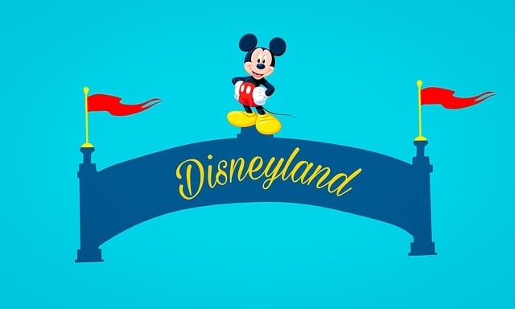

1. Early Life and Career
Walt Disney was born in 1901 in Chicago, Illinois. He showed an early interest in art and drawing, and after high school, he attended the Academy of Fine Arts in Chicago. However, he dropped out after a year and moved to Hollywood to pursue a career in animation.
In 1923, Disney co-founded the Disney Brothers Studio with his brother Roy. The company produced a series of successful animated shorts, including the "Alice Comedies" and "Oswald the Lucky Rabbit."
2. Mickey Mouse and the Rise of Disney
In 1928, Disney introduced the world to Mickey Mouse with the release of "Steamboat Willie." The character became an instant hit and helped propel Disney to even greater success.
Throughout the 1930s, Disney continued to produce a series of groundbreaking animated films, including "Snow White and the Seven Dwarfs," "Pinocchio," and "Fantasia." These films helped establish Disney as a leader in the entertainment industry and set the stage for the company's future success.
3. Disneyland and Beyond

In 1955, Disney opened Disneyland, the world's first theme park. The park was an immediate success and paved the way for the development of numerous other theme parks around the world.
Disney continued to innovate throughout the 1960s and 1970s with the introduction of new characters like Winnie the Pooh and the expansion of the company's film and television production. Today, Disney is a global entertainment powerhouse, with a diverse portfolio that includes everything from theme parks and movies to merchandise and consumer products.
4. What Makes Disney Successful?
So what makes Disney so successful? One key factor is the company's focus on creativity and innovation. Disney has always been willing to take risks and push the boundaries of what's possible, which has allowed it to stay ahead of the competition.
Another factor is Disney's commitment to storytelling. From its animated films to its theme park attractions, Disney places a premium on storytelling and creating immersive experiences for its audiences. This has helped the company build a loyal and passionate fan base.
Disney's ability to adapt and evolve has been crucial to its success. The company has been able to stay relevant and appeal to new generations of consumers by constantly reinventing itself and introducing new characters and experiences.
Conclusion:
Today, the Disney brand is synonymous with magic, wonder, and imagination. Whether you're a fan of the classic animated films or the newest Disney+ originals, there's something for everyone in the world of Disney.
1. Who is the founder of Disney?
Walt Disney is the founder of Disney.
2. When was Disneyland opened?
Disneyland was opened in 1955.
3. What are some of Disney's most popular characters?
Some of Disney's most popular characters include Mickey Mouse, Cinderella, and Elsa from "Frozen."
4. What is Disney's focus on storytelling?
Disney places a premium on storytelling, using it to create immersive experiences for its audiences.
5. What is Disney's commitment to creativity?
Disney is committed to creativity and innovation, constantly pushing the boundaries of what's possible.